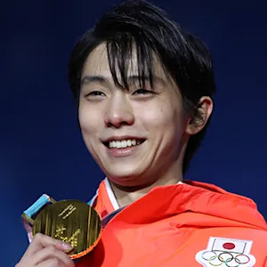
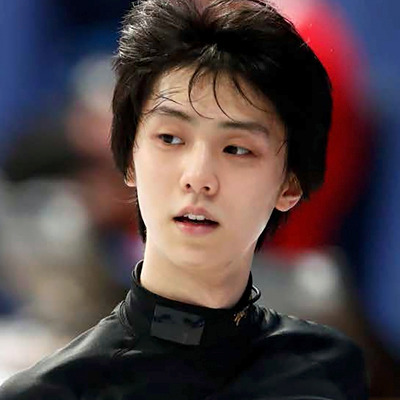
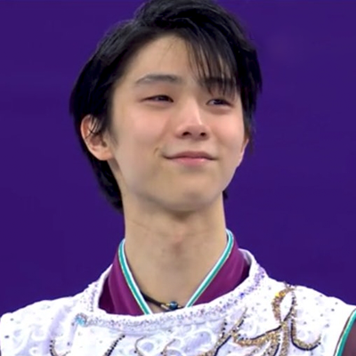

 B I O G R A P H Y
It's hard to argue that anyone has had a bigger impact on modern-day figure skating than Hanyu Yuzuru, the two-time Olympic champion.
Hanyu’s technique is outstanding, but he combines his ability with an astonishing creativity and artistry. He makes difficult moves like the Beillmann spin and the doughnut spin look simple.
Battling through multiple injuries, the Japanese star has changed the landscape of the sport since his first Olympic title at Sochi 2014. A huge presence in Japan, he is a star of TV and film as well as one of the country’s most famous athletes.
Aged just 19, Hanyu became the first Asian man to win an Olympic gold medal when he triumphed in Sochi, becoming the youngest men's champion since 1948. He followed up by defending his Olympic title in PyeongChang 2018, becoming the first man to go back-to-back for Olympic gold since 1952 (Richard Button).
During his career, Hanyu has also won two world titles and four Grand Prix Finals – cementing himself as perhaps one of Japan's finest ice athletes, and also his place as one of the greatest figure skaters in history. Hanyu was also the first skater to successfully land a quadruple loop jump in ISU competition, doing so in 2016.
He has broken an extraordinary 18 world scoring records, and was also the first man ever to break the 100-point mark in the short program, the first to gain 200 points in a free skate, and the first to get a combined total of 300.
 @yuzuruofficial_
@yuzuruofficial_ @hanyuyuzuru2624
@hanyuyuzuru2624 @YUZURUofficial_
@YUZURUofficial_⎯⎯⎯⎯⎯⎯⎯⎯⎯⎯⎯⎯⎯⎯⎯⎯⎯⎯⎯⎯⎯⎯⎯⎯⎯⎯⎯⎯⎯⎯⎯⎯⎯⎯⎯⎯⎯⎯⎯⎯⎯⎯⎯⎯⎯⎯⎯⎯⎯⎯⎯⎯⎯⎯⎯⎯⎯⎯⎯⎯⎯⎯⎯⎯⎯⎯⎯⎯
TWO-TIME OLYMPIC CHAMPION
⎯⎯⎯⎯⎯⎯⎯⎯⎯⎯⎯⎯⎯⎯⎯⎯⎯⎯⎯⎯⎯⎯⎯⎯⎯⎯⎯⎯⎯⎯⎯⎯⎯⎯⎯⎯⎯⎯⎯⎯⎯⎯⎯⎯⎯⎯⎯⎯⎯⎯⎯⎯⎯⎯⎯⎯⎯⎯⎯⎯⎯⎯⎯⎯⎯⎯⎯⎯
Source:Olympics | Yuzuru Hanyu